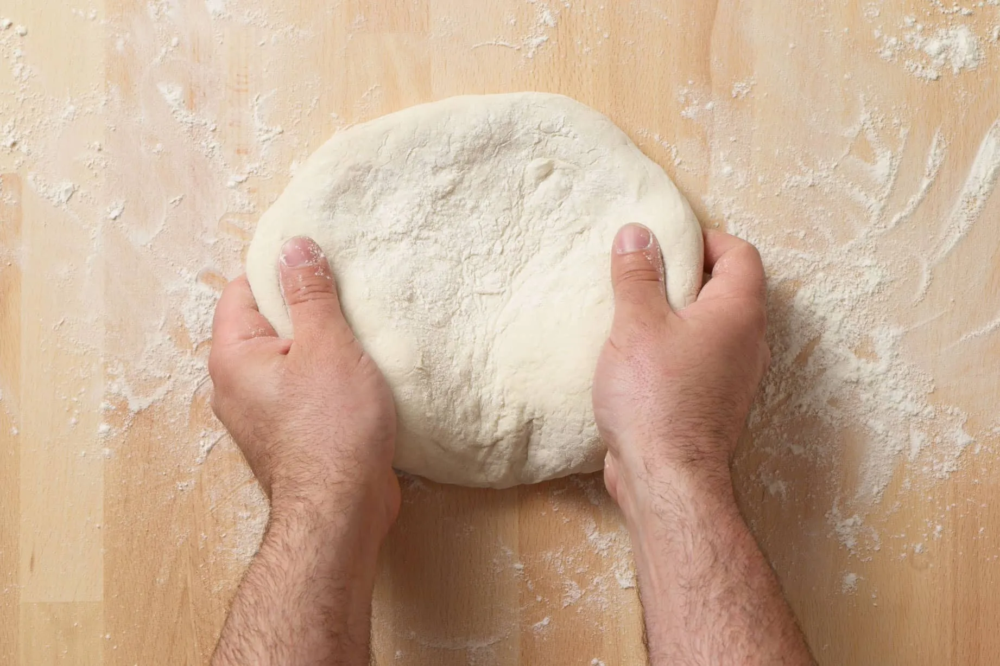
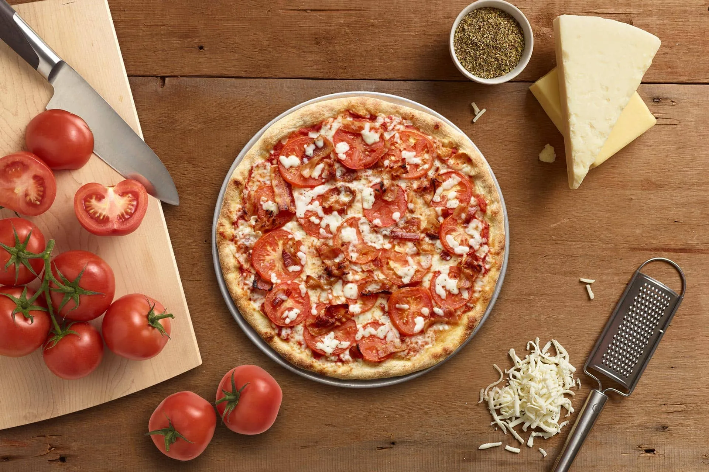

Our Food
A TRULY ARTISAN PIZZA
Our pizza chefs hand stretch each pizza when you order it. Nothing is made in a machine or assembled out of a package. We don’t even use timers — we use our eyes. Just another time-tested part of the old world artisan process we keep alive.
IT’S IN THE DETAILS
What makes our pizza special? It’s in the details. Details like traditional dough, made fresh daily right here in Walpole, Mass. using only five simple ingredients: locally-milled hard winter wheat flour, water, yeast, salt and oil. Our specially crafted tomato sauce made from vine-ripened California crushed tomatoes. Top that with our signature blend of three premium cheeses for an authentic pizza with the uniquely delicious taste you won’t get anywhere else.
ROOTED IN HISTORY
When Mike Valerio and his wife opened the first Papa Gino’s in 1961 in East Boston, they used the recipes that his family brought over from Italy in the 1930’s. That pizza recipe has never changed and is still being used today. That’s why every Papa Gino’s pizza still has that same distinctive, authentic Italian taste. So the pizza you grew up with is the same pizza you feed your family.